Before and after
The same sample data, rendered by the current demo engine and by the hand-built target.
1. Home screen
Before
Three count tiles, then full-text approval cards and a text feed. The reader has to read every card to learn what happened this morning. (before/02-home-lower.jpg shows the rest: a plain table.)
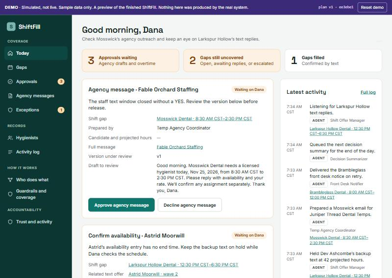
After
Tiles first, including two measured against their targets. Then one picture of the whole morning: a lane per work item, a now line, event marks, reply windows and shift starts. Decisions sit beside a funnel per work item. The feed moves to the bottom.
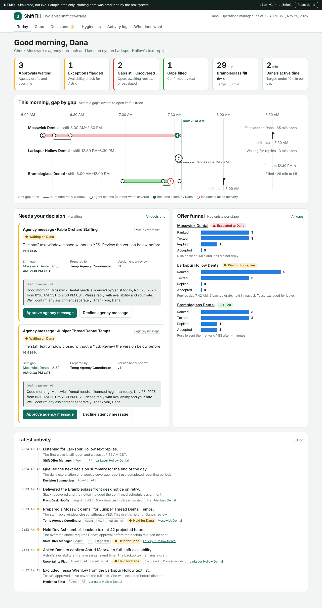
2. List screen
Before
A table with thin meters and no target. 85 min and 29 min look alike; nothing says the target is 30.
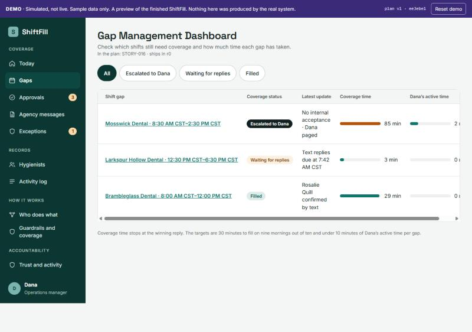
After
Each meter prints value and target together and changes form when over target. Below the table, each work item gets a path of steps with the minutes between steps, so the 64-minute wait is visible at a glance.
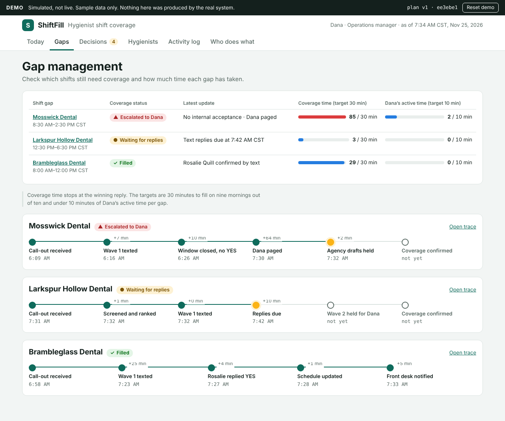
3. Record detail
Before
Two tables (decisions, activity) and a fact list. Candidates, their hours and the offers are on other pages.
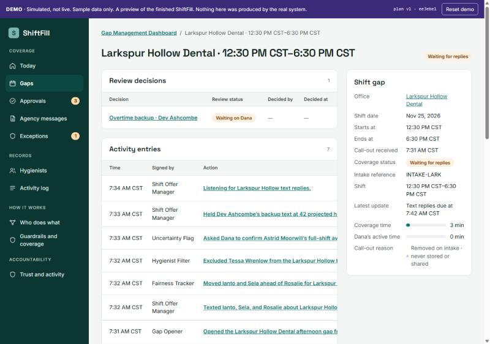
After
Facts, the path so far, the decisions for this record with working buttons, then child rows as bars against the 40-hour limit beside the funnel and the messages sent, then the event trace with actor, tier, risk and held state.
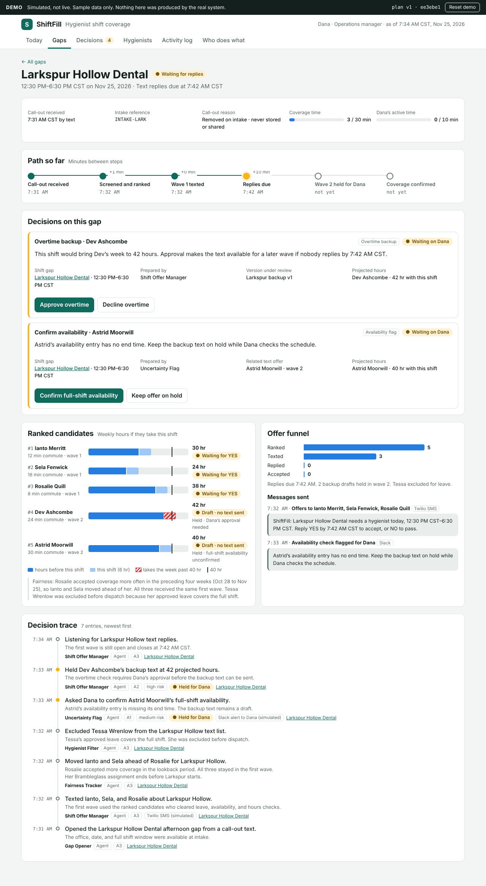
4. People list
Before
A table with hours as text. The reader compares nine numbers by reading them.
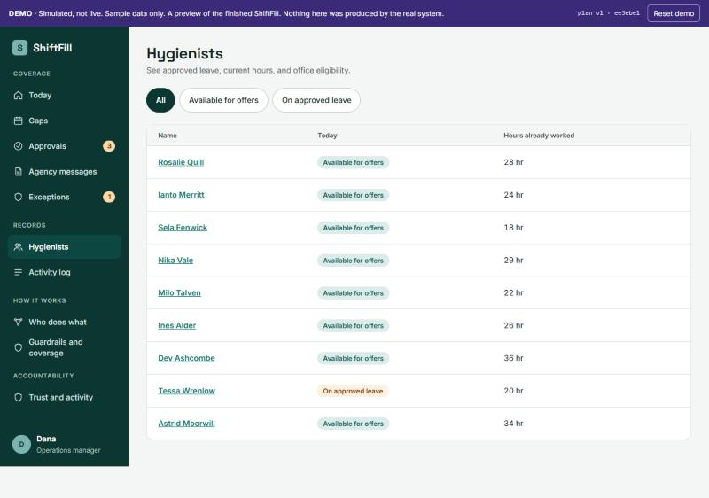
After
The shared numeric field becomes bars with a limit line; status stays a pill with icon and label; the join entity (person by office with a number) becomes a matrix.
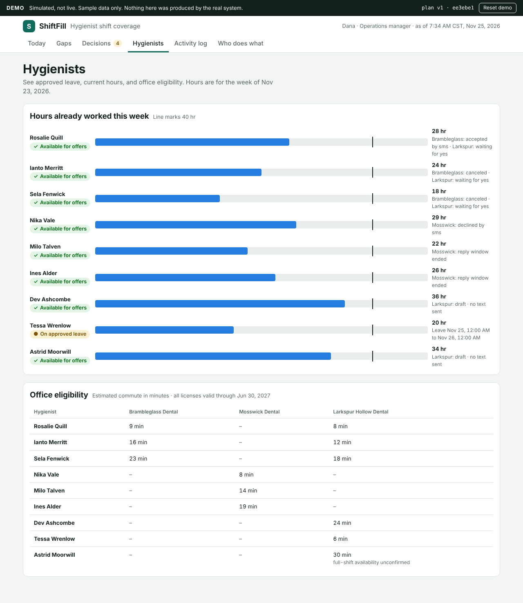
5. Who does what
Before
Says "The plan names no agents" although the activity log names twelve.
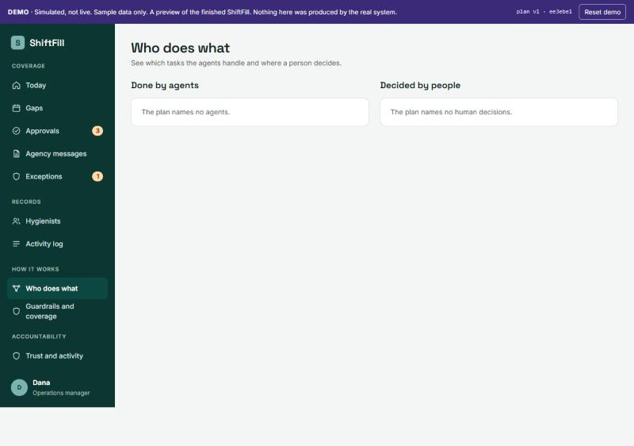
After
Built from the events: summary tiles, one stacked bar of actions by autonomy tier, the agent roster with counts and held or failed flags, the decisions made by people, connections used and requirement ids cited.
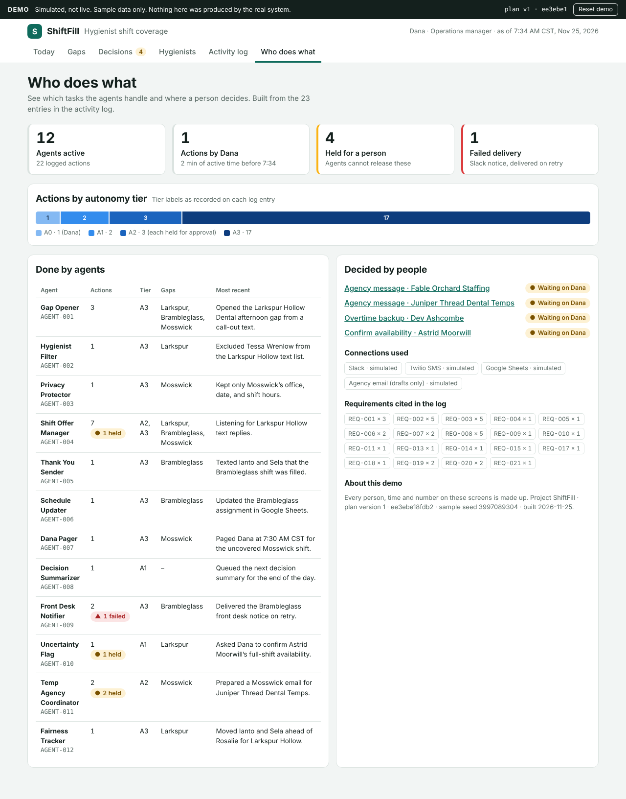
6. Decisions (new merged view)
Before
Approvals, agency messages and exceptions are three separate menu items showing overlapping items.
After
One filterable queue of decision cards: why it needs a person, the facts, the exact content under review, primary and secondary action.
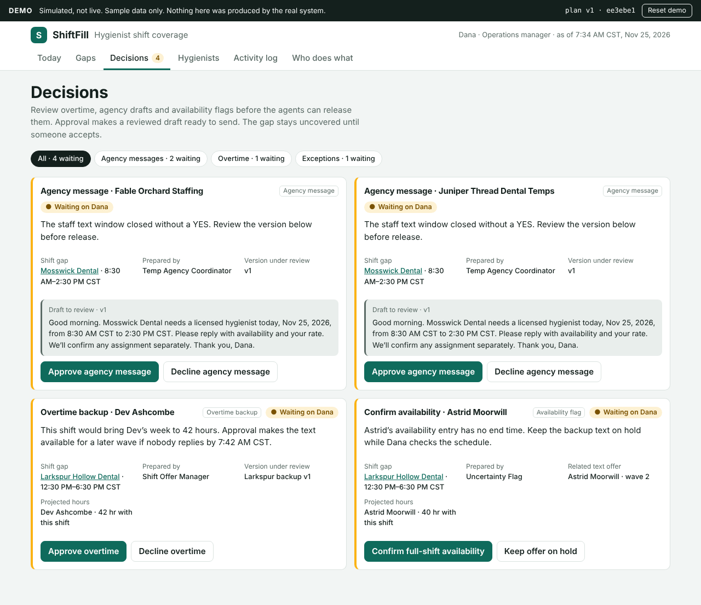